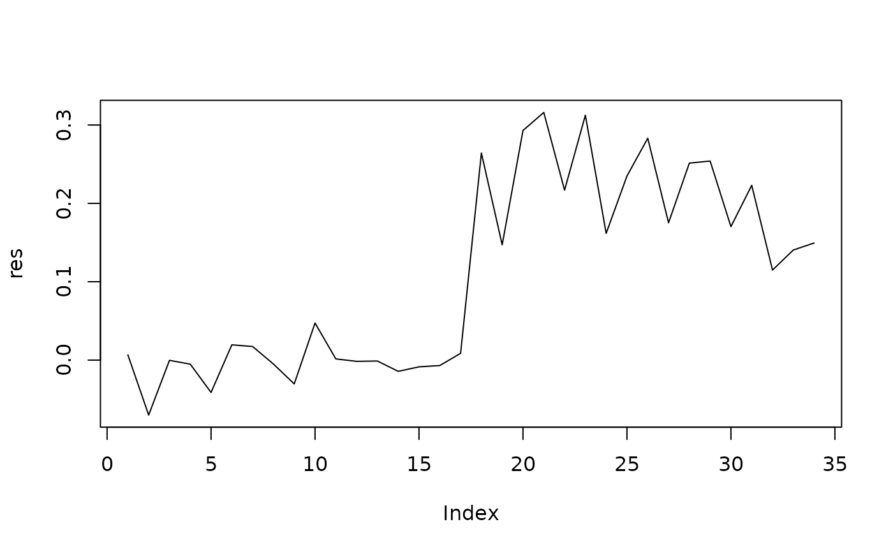

Genlight objects can contain millions of loci. Since it does not make much sense to calculate the index of association over that many loci, this function will scan windows across the loci positions and calculate the index of association.
Usage
win.ia(
x,
window = 100L,
min.snps = 3L,
threads = 1L,
quiet = FALSE,
name_window = TRUE,
chromosome_buffer = TRUE
)Arguments
- x
- window
an integer specifying the size of the window.
- min.snps
an integer specifying the minimum number of snps allowed per window. If a window does not meet this criteria, the value will return as
NA.- threads
The maximum number of parallel threads to be used within this function. Defaults to 1 thread, in which the function will run serially. A value of 0 will attempt to use as many threads as there are available cores/CPUs. In most cases this is ideal for speed. Note: this option is passed to
bitwise.ia()and does not parallelize the windowization process.- quiet
if
FALSE(default), a progress bar will be printed to the screen.- name_window
if
TRUE(default), the result vector will be named with the terminal position of the window. In the case where several chromosomes are represented, the position will be appended using a period/full stop.- chromosome_buffer
DEPRECATED if
TRUE(default), buffers will be placed between adjacent chromosomal positions to prevent windows from spanning two chromosomes.
Note
this will calculate the standardized index of association from Agapow
and Burt, 2001. See ia() for details.
Examples
# with structured snps assuming 1e4 positions
set.seed(999)
x <- glSim(n.ind = 10, n.snp.nonstruc = 5e2, n.snp.struc = 5e2, ploidy = 2)
position(x) <- sort(sample(1e4, 1e3))
res <- win.ia(x, window = 300L) # Calculate for windows of size 300
plot(res, type = "l")

if (FALSE) { # \dontrun{
# unstructured snps
set.seed(999)
x <- glSim(n.ind = 10, n.snp.nonstruc = 1e3, ploidy = 2)
position(x) <- sort(sample(1e4, 1e3))
res <- win.ia(x, window = 300L) # Calculate for windows of size 300
plot(res, type = "l")
# Accounting for chromosome coordinates
set.seed(999)
x <- glSim(n.ind = 10, n.snp.nonstruc = 5e2, n.snp.struc = 5e2, ploidy = 2)
position(x) <- as.vector(vapply(1:10, function(x) sort(sample(1e3, 100)), integer(100)))
chromosome(x) <- rep(1:10, each = 100)
res <- win.ia(x, window = 100L)
plot(res, type = "l")
# Converting chromosomal coordinates to tidy data
library("dplyr")
library("tidyr")
res_tidy <- res %>%
tibble(rd = ., chromosome = names(.)) %>% # create two column data frame
separate(chromosome, into = c("chromosome", "position")) %>% # get the position info
mutate(position = as.integer(position)) %>% # force position as integers
mutate(chromosome = factor(chromosome, unique(chromosome))) # force order chromosomes
res_tidy
# Plotting with ggplot2
library("ggplot2")
ggplot(res_tidy, aes(x = position, y = rd, color = chromosome)) +
geom_line() +
facet_wrap(~chromosome, nrow = 1) +
ylab(expression(bar(r)[d])) +
xlab("terminal position of sliding window") +
labs(caption = "window size: 100bp") +
theme(axis.text.x = element_text(angle = 90, hjust = 1, vjust = 0.5)) +
theme(legend.position = "top")
} # }